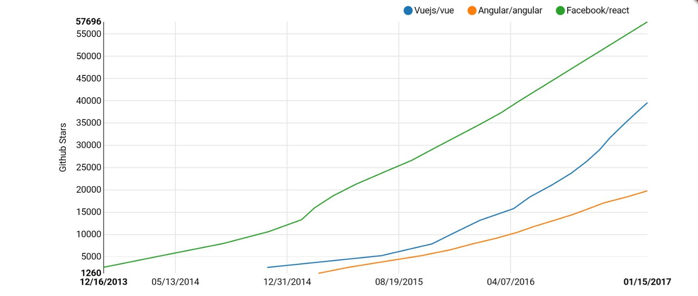
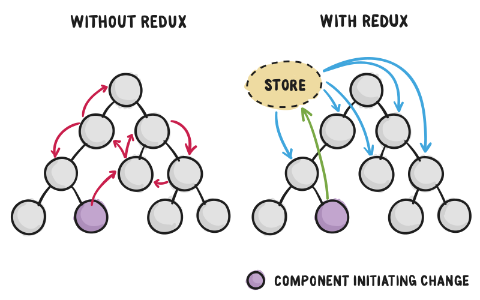

Single Page Applications
DAI-18
Sigle Page Applications
Son aplicaciones web similares a las de los móviles
En la primera llamada a al servidor, se carga toda la aplicación
(html, css, js)
Y después la interación con el servidor es a través de AJAX

M V C
En estas aplicaciones la Vista y el Controlador pasan a estar en el navegador, (con javascript)
que se comunica REST con
el servidor, que solo se ocupa del Modelo, que interactua con
la Base de Datos
Angular vs Vue vs React

React
Es una libería para hacer componentes para este tipo de aplicaciones, (básicamente la Vista) que se complementa con:
para el Controlador
React
Utilza un DOM virtual, que se re-renderiza al cambiar el state
o las props

Basada en componentes
Son clases de ES6 que tienen asociados unas variables props (propiedades, para comunicar elementos), y
un state (variable gloabal del componente)
JSX
Utilza el leguaje de templates JSX
Ciclo de vida
Los componentes tienen asociados métodos que se ejecutan automáticamente cuando cambia el estado
Los datos van hacia abajo
<ComponenteDeArriba>
<OtroComponente argumento={variable} />
</ComponenteDeArriba>
Redux
Para comunicar hacia arriba, hace falta Redux
que introduce el store (una variable global para toda la aplicación)
Getting Started with React – An Overview and Walkthrough